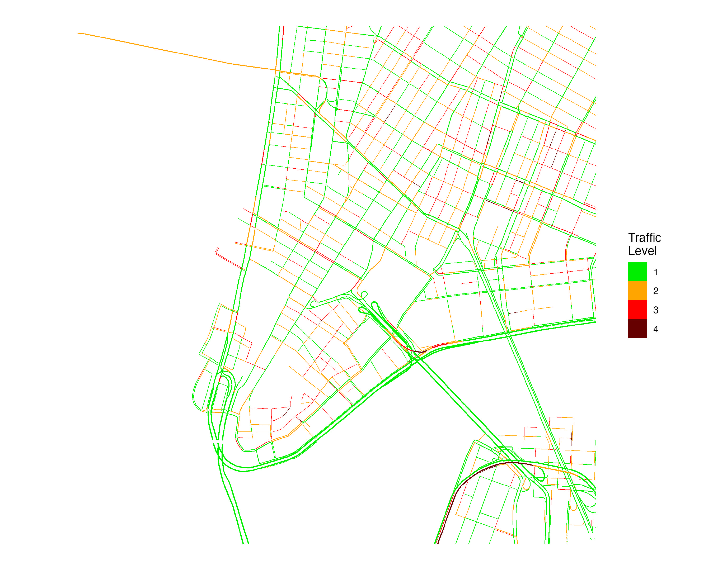
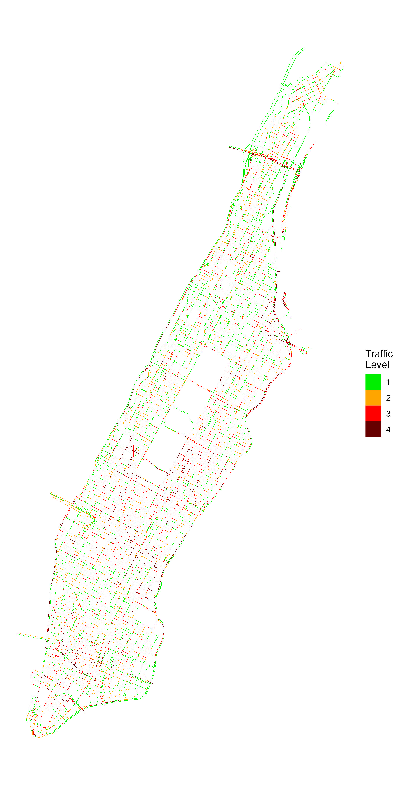
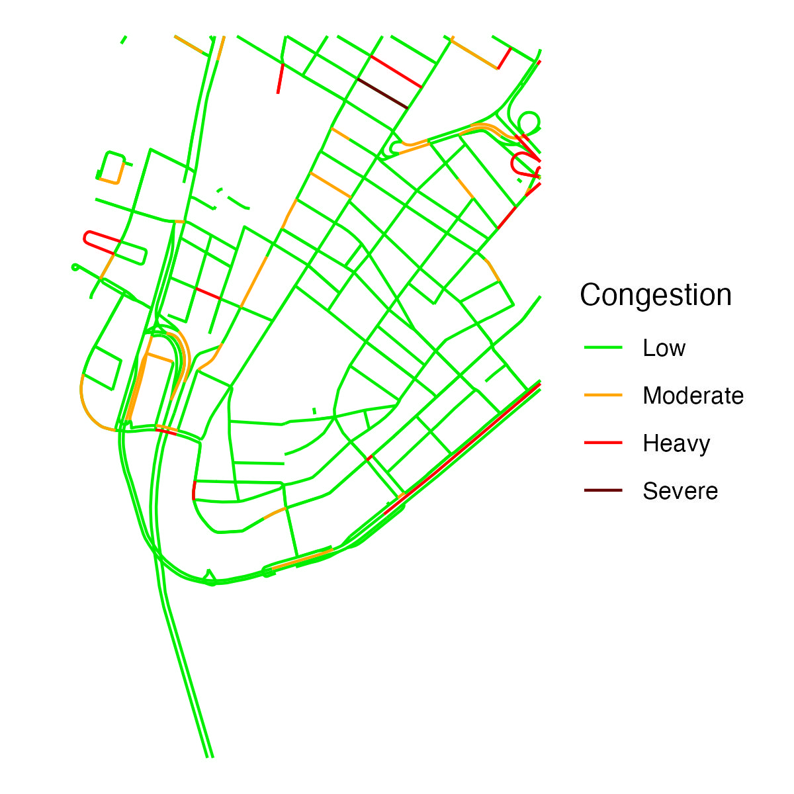
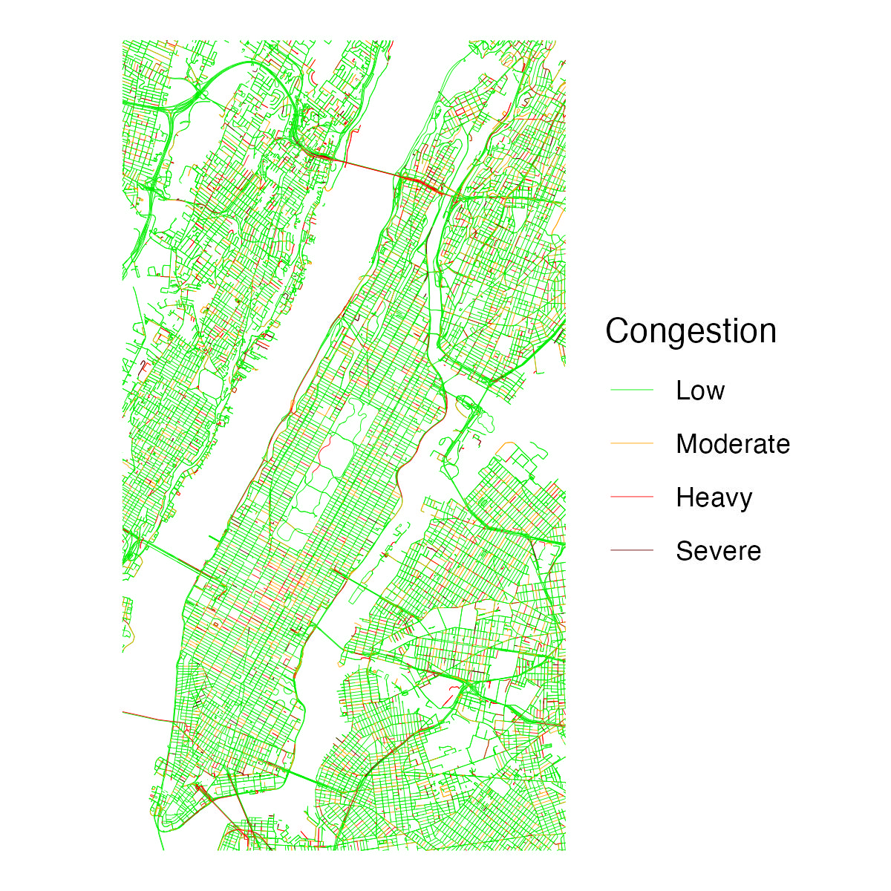

Create Georeferenced Traffic Data from the Google Maps Javascript API
Overview
Google Maps displays information about traffic conditions across an area. This package provides functions to produce georeferenced rasters from real-time Google Maps traffic information. Having Google traffic information in a georeferenced data format facilitates analysis of traffic information (e.g., spatially merging traffic information with other data sources).
This package was inspired by (1) existing research that has used Google traffic information, including in New York City and Dar es Salaam, and (2) similar algorithms implemented in JavaScript and in a C shell script.
Pixel values in rasters are derived from Google traffic colors and can be one of four values:
| Google Traffic Color | Description | Raster Value |
|---|---|---|
| Green | No traffic delays | 1 |
| Orange | Medium traffic | 2 |
| Red | High traffic | 3 |
| Dark Red | Heavy traffic | 4 |
Installation
The package can be installed via CRAN.
install.packages("googletraffic")To install the development version from Github:
# install.packages("devtools")
devtools::install_github("dime-worldbank/googletraffic")API Key
Querying Google traffic information requires a Google API key with the Maps Javascript API enabled. To create a Google API key, follow these instructions.
Quickstart
Raster around point
To create a raster around a point, we set the centroid coordinate, the zoom level, and the height/width around the centroid coordinate (height/width are in terms of pixels, and kilometer distance of a pixel is determined primarily by the zoom level).
## Make raster
r <- gt_make_raster(location = c(40.712778, -74.006111),
height = 2000,
width = 2000,
zoom = 16,
google_key = google_key)
## Plot
r_df <- rasterToPoints(r, spatial = TRUE) %>% as.data.frame()
names(r_df) <- c("value", "x", "y")
ggplot() +
geom_raster(data = r_df,
aes(x = x, y = y,
fill = as.factor(value))) +
labs(fill = "Traffic\nLevel") +
scale_fill_manual(values = c("green2", "orange", "red", "#660000")) +
coord_quickmap() +
theme_void() +
theme(plot.background = element_rect(fill = "white", color="white"))
Raster around polygon
We can also create a raster using a polygon to define the location. If needed, the function will make multiple API calls to cover the area within the polygon (a larger zoom value will result in needing to make more API calls).
## Grab shapefile of Manhattan
us_sp <- getData('GADM', country='USA', level=2)
ny_sp <- us_sp[us_sp$NAME_2 %in% "New York",]
## Make raster
r <- gt_make_raster_from_polygon(polygon = ny_sp,
zoom = 16,
google_key = google_key)
## Plot
r_df <- rasterToPoints(r, spatial = TRUE) %>% as.data.frame()
names(r_df) <- c("value", "x", "y")
ggplot() +
geom_raster(data = r_df,
aes(x = x, y = y,
fill = as.factor(value))) +
labs(fill = "Traffic\nLevel") +
scale_fill_manual(values = c("green2", "orange", "red", "#660000")) +
coord_quickmap() +
theme_void() +
theme(plot.background = element_rect(fill = "white", color="white"))
Usage
See this vignette for additional information and examples illustrating how to use the package.
Alternatives to Google Maps traffic information
Google Maps is one of many sources that shows traffic information. One alternative source is Mapbox, which provides vector tilesets that—similar to Google—show four levels of live traffic. The mapboxapi package provides a convenient way to obtain traffic information from Mapbox as sf polylines using the get_vector_tiles function. The function requires a Mapbox API key, which can be obtained here.
They key differences between traffic information from the mapboxapi and googletraffic packages are that:
-
googletrafficprovides data in raster format, whilemapboxapiprovides data as polylines - To cover traffic over large areas,
googletrafficcan require significantly less API calls compared tomapboxapi
Below is an example querying traffic information from Mapbox:
## Load package
library(mapboxapi)
library(sf)
## Set API key
mapbox_key <- "MAPBOX-KEY-HERE"
## Query Data
nyc_cong_point <- get_vector_tiles(
tileset_id = "mapbox.mapbox-traffic-v1",
location = c(-74.006111, 40.712778), # c(longitude, latitude)
zoom = 14,
access_token = key
)$traffic$lines
#### Plot Data
nyc_cong_point %>%
mutate(congestion = congestion %>%
tools::toTitleCase() %>%
factor(levels = c("Low", "Moderate", "Heavy", "Severe"))) %>%
ggplot() +
geom_sf(data = nyc_cong_point, aes(color = congestion)) +
scale_color_manual(values = c("green2", "orange", "red", "#660000")) +
labs(color = "Congestion") +
theme_void() +
theme(plot.background = element_rect(fill = "white", color="white"))
Like gt_make_raster(), get_vector_tiles uses a latitude, longitude, and zoom level as input. get_vector_tiles does not have parameters to define the number of pixels the map covers. However, get_vector_tiles also accepts an sf polygon, where multiple queries are made to cover the bounding box of the polygon.
The below example shows querying data for all of Manhattan. One key difference between using Mapbox and Google Maps is that get_vector_tiles requires 66 queries to cover Manhattan, while gt_make_raster_from_polygon requires 5 queries.
## Grab shapefile of Manhattan
us_sp <- getData('GADM', country='USA', level=2)
ny_sp <- us_sp[us_sp$NAME_2 %in% "New York",]
ny_sf <- ny_sp %>% st_as_sf()
## Query traffic data
nyc_cong_poly <- get_vector_tiles(
tileset_id = "mapbox.mapbox-traffic-v1",
location = ny_sf,
zoom = 14,
access_token = key
)$traffic
## Map
nyc_cong_poly <- nyc_cong_poly %>%
mutate(congestion = congestion %>%
tools::toTitleCase() %>%
factor(levels = c("Low", "Moderate", "Heavy", "Severe")))
ggplot() +
geom_sf(data = nyc_cong_poly, aes(color = congestion),
size = 0.1) +
scale_color_manual(values = c("green2", "orange", "red", "#660000")) +
labs(color = "Congestion") +
theme_void() +
theme(plot.background = element_rect(fill = "white", color="white"))
In addition to providing vector-based data on traffic levels, Mapbox also provides information on typical and live traffic speeds. Obtaining this speed information requires Mapbox Enterprise access.